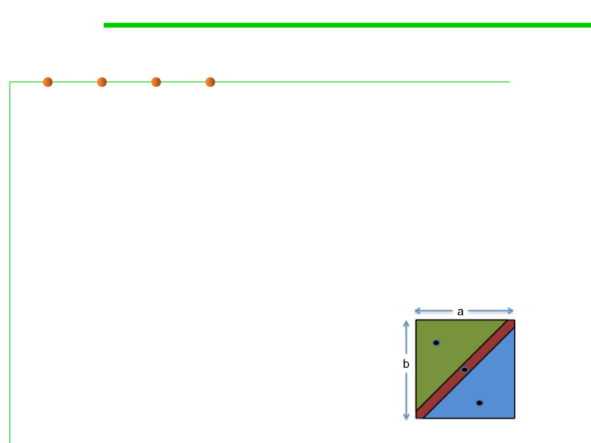

Example: max()
7.5 Testing and Test-First Programming
▪ Another example from the Java library: the integer max() function,
found in the Math class.
/**
* @param a an argument
* @param b another argument
* @return the larger of a and b.
*/
public static int max(int a, int b)
– max : int × int → int
– From the specification, it makes sense to partition this function as:
•a<b
•a=b
•a>b
– Our test suite might then be:
• (a, b) = (1, 2) to cover a < b
• (a, b) = (9, 9) to cover a = b
• (a, b) = (-5, -6) to cover a > b